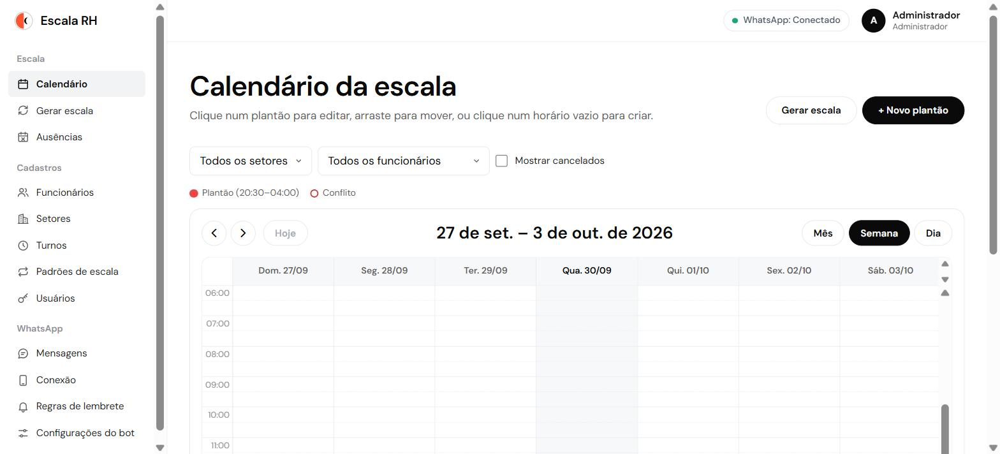
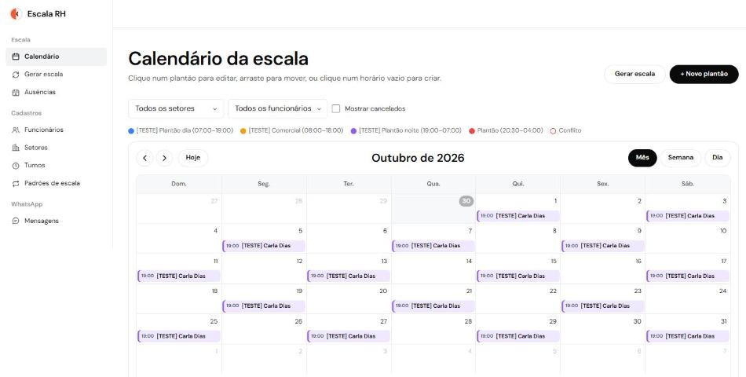
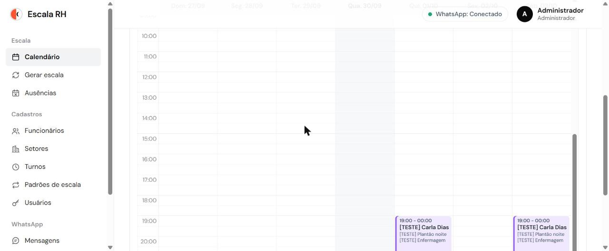
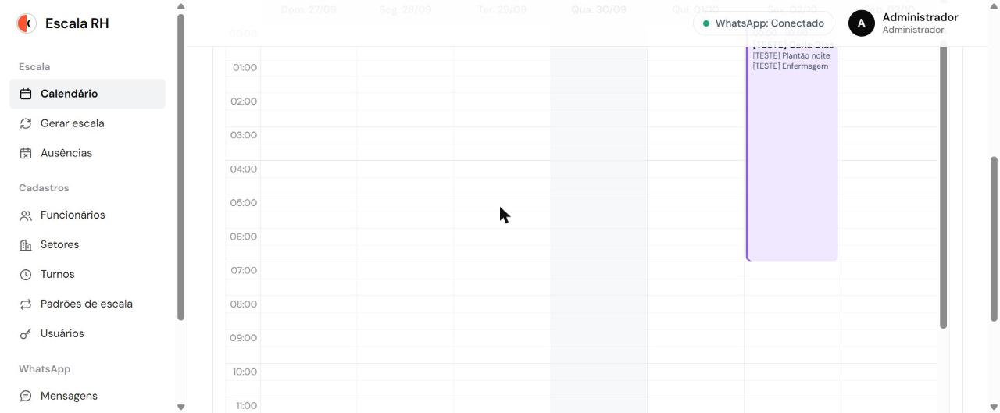

Tutorial do Escala RH
Guia passo a passo para o RH e os gestores montarem a escala, avisarem os funcionários pelo WhatsApp e resolverem os problemas do dia a dia.
Todas as telas deste tutorial foram capturadas no sistema real, usando dados de exemplo com o prefixo [TESTE] (uma clínica fictícia). Telefones e nomes reais foram borrados.
Sumário
- O que é o sistema e quem usa
- Conceitos: setor, turno, padrão, plantão, escala, ausência, lembrete e bot
- Primeiro acesso, senha e navegação
- Configuração inicial passo a passo
- Montando a escala do mês
- Calendário no dia a dia
- Ausências
- WhatsApp: conexão, lembretes e bot
- Histórico de mensagens e o que fazer quando falha
- Rotina mensal do RH
- Perguntas frequentes - Anexo: divergências e sugestões de melhoria
1. O que é o sistema e quem usa
O Escala RH organiza os plantões da equipe num calendário e avisa cada funcionário pelo WhatsApp antes do turno. O funcionário também pode consultar a própria escala conversando com o bot no WhatsApp.
| Perfil | Onde acessa | O que pode fazer |
|---|---|---|
| Administrador | Painel | Tudo: usuários, setores, turnos, padrões, funcionários, escalas, ausências, mensagens, conexão do WhatsApp, regras de lembrete e configurações do bot. |
| Gestor | Painel | Funcionários, plantões, ausências e mensagens somente dos setores vinculados a ele. Vê (sem alterar) setores, turnos e padrões. |
| Funcionário | Só WhatsApp | Recebe os lembretes e consulta a escala pelo bot. Não tem login. |
Menu do administrador × menu do gestor. O gestor não vê Usuários, Conexão, Regras de lembrete nem Configurações do bot, e o calendário dele mostra só os plantões dos setores dele.
| Administrador | Gestor (só "[TESTE] Enfermagem") |
|---|---|
 |
 |
Na tela Setores, o gestor vê apenas os setores vinculados a ele, sem botão de editar:
2. Conceitos
| Termo | O que é | Exemplo |
|---|---|---|
| Setor | Área da empresa. Gestores só veem os setores vinculados a eles. | Enfermagem, Portaria, Recepção |
| Turno | Um horário de trabalho, com nome e cor. Pode virar a noite. | Plantão dia 07:00–19:00 · Plantão noite 19:00–07:00 · Comercial 08:00–18:00 |
| Padrão de escala | Quais dias a pessoa trabalha (não o horário). | 12x36, 6x1, 5x2 |
| Plantão | Um dia e horário concretos de um funcionário no calendário. É o que gera lembrete. | Ana, qui 01/10, 07:00–19:00, Enfermagem |
| Escala | O conjunto de plantões de um período (ex.: o mês). | Escala de outubro da Enfermagem |
| Ausência | Férias, atestado, folga ou outro motivo, por período de datas. Os plantões nesses dias ficam bloqueados. | Ana de férias de 12 a 21/10 |
| Regra de lembrete | Quando e com qual texto o WhatsApp avisa o funcionário. | "Véspera 18h", "1 hora antes" |
| Bot | Atendimento automático no WhatsApp: o funcionário consulta a própria escala. | Envia 1 → recebe o próximo turno |
Fórmula para guardar: Padrão (quais dias) + Turno (que horas) + Data de início do ciclo + Período = Plantões
Tipos de padrão
- Ciclo: X dias de trabalho e Y de folga, repetindo sem olhar o dia da semana.
- 12x36 = 1 dia de trabalho e 1 de folga, com turno de 12 h. Já vem cadastrado.
- 6x1 = 6 dias de trabalho e 1 de folga. Já vem cadastrado.
- 4x2 = 4 dias de trabalho e 2 de folga.
- Semanal: dias fixos da semana.
- 5x2 = segunda a sexta. Já vem cadastrado.
- Seg a sáb = segunda a sábado.
Data de início do ciclo (o ponto que mais gera dúvida)
É o primeiro dia de trabalho do ciclo. Duas pessoas no 12x36 com inícios em dias seguidos se revezam e cobrem todos os dias. Para continuar a escala do mês anterior, informe um dia em que a pessoa trabalhou no ciclo atual. O sistema calcula a sequência para frente.
Exemplo de outubro/2026 (01/10 é uma quinta-feira):
| Dia | 01 | 02 | 03 | 04 | 05 | 06 | ... |
|---|---|---|---|---|---|---|---|
| Equipe A (início 01/10) | trabalha | folga | trabalha | folga | trabalha | folga | dias ímpares |
| Equipe B (início 02/10) | folga | trabalha | folga | trabalha | folga | trabalha | dias pares |
3. Primeiro acesso, senha e navegação
Entrar no painel
- Abra o endereço do painel. Quem instalou o sistema informa esse endereço.
- Digite o E-mail e a Senha recebidos e clique em Entrar.
- A sessão dura 12 horas. Depois disso é preciso entrar de novo.
- Depois de 5 tentativas erradas em 1 minuto, espere um minuto antes de tentar de novo.
- Esqueceu a senha? Peça a um administrador para definir uma nova em Usuários (seção 4.4).
Trocar a senha
- Clique no seu nome, no canto superior direito. Aparecem as opções Trocar senha e Sair.
- Em Trocar senha, preencha Senha atual, Nova senha (mínimo de 8 caracteres) e Confirmar nova senha. Depois clique em Salvar.
Como navegar
- O menu lateral tem três grupos:
- Escala: Calendário, Gerar escala, Ausências.
- Cadastros: Funcionários, Setores, Turnos, Padrões de escala, Usuários.
- WhatsApp: Mensagens, Conexão, Regras de lembrete, Configurações do bot.
- No topo fica o status do WhatsApp ("WhatsApp: Conectado", com bolinha verde). Se o WhatsApp cair, aparece uma faixa vermelha no topo do painel avisando que os lembretes não serão enviados.
4. Configuração inicial passo a passo
Ordem recomendada: Setores → Turnos → Padrões de escala → Usuários (gestores) → Funcionários → Gerar escala → conferir no Calendário.
Nada é apagado nos cadastros (setor, turno, padrão, usuário, funcionário). Para "remover", edite o item e desmarque ativo. Itens inativos somem das listas de escolha, mas o histórico continua.
Cenário usado como exemplo: uma clínica com atendimento 24 h na enfermagem e na portaria, mais um setor administrativo em horário comercial.
4.1 Setores (administrador)
- Abra Cadastros › Setores e clique em + Novo setor.
- Digite o Nome (ex.:
[TESTE] Enfermagem), deixe Setor ativo marcado e clique em Salvar.
Repita para Portaria e Administrativo:
4.2 Turnos (administrador)
- Abra Cadastros › Turnos e clique em + Novo turno.
- Preencha Nome, Hora de início e Hora de fim. O painel mostra a Duração sozinho.
- Escolha a Cor no calendário e clique em Salvar.
Turno que vira a noite: com início 19:00 e fim 07:00, o painel avisa "termina no dia seguinte (vira a noite)". Não é preciso fazer nada especial.
Na lista, o turno noturno ganha a etiqueta vira a noite:
| Turno de exemplo | Início | Fim | Observação |
|---|---|---|---|
| [TESTE] Plantão dia | 07:00 | 19:00 | 12 h |
| [TESTE] Plantão noite | 19:00 | 07:00 | atravessa a meia-noite |
| [TESTE] Comercial | 08:00 | 18:00 | 10 h |
4.3 Padrões de escala (administrador)
Os padrões 12x36, 6x1 e 5x2 já vêm cadastrados:
Criar um padrão de ciclo (ex.: 4x2):
- Clique em + Novo padrão.
- Digite o nome, escolha Ciclo (trabalha X dias, folga Y) e preencha Dias de trabalho = 4 e Dias de folga = 2.
- Clique em Salvar.
Criar um padrão semanal (ex.: segunda a sábado):
- Escolha Semanal (dias fixos).
- Marque os Dias da semana trabalhados e clique em Salvar.
Lembre-se: o padrão diz quais dias. O horário vem do turno escolhido na hora de gerar a escala.
4.4 Usuários do painel (administrador)
- Abra Cadastros › Usuários e clique em + Novo usuário.
- Preencha Nome, E-mail e Senha (mínimo de 8 caracteres).
- Escolha o perfil, Gestor ou Administrador.
- Para gestor, marque os Setores que este gestor pode ver.
- Deixe Usuário ativo marcado e clique em Salvar.
Redefinir a senha de alguém: clique em Editar e preencha Nova senha. Se deixar em branco, a senha atual é mantida. Bloquear o acesso: clique em Editar e desmarque Usuário ativo. O bloqueio vale na hora.
4.5 Funcionários
- Abra Cadastros › Funcionários e clique em + Novo funcionário.
- Preencha Nome e WhatsApp. No WhatsApp, digite só o DDD e o celular com o 9 na frente: o campo formata
sozinho como
(51) 99999-8888e o +55 é colocado automaticamente. - Confira a linha "Será salvo como +55 (DD) ..." logo abaixo do campo, principalmente o DDD.
- Escolha o Setor, preencha Cargo e Observações (opcionais) e clique em Salvar.
O quadro cinza no formulário lembra: oriente cada funcionário a salvar o número do WhatsApp da empresa na agenda do celular. Isso evita que as mensagens caiam como "desconhecidas" e reduz o risco de bloqueio do número.
Erros comuns ao salvar:
| Mensagem | O que significa |
|---|---|
| "Celular precisa ter 9 dígitos (com o 9 na frente)." | Faltou o 9 no começo do celular. |
| "Telefone já cadastrado para …" | Esse número já pertence a outro funcionário, mesmo que ele esteja inativo. |
Ativo × inativo: o funcionário inativo não recebe lembretes nem respostas do bot. Para desligar alguém, abra Editar e desmarque Ativo.
Use a busca (nome ou telefone) e os filtros de setor e situação (Somente ativos / Somente inativos / Todos):
Funcionários do cenário de exemplo:
| Nome | Setor | Cargo | Escala planejada |
|---|---|---|---|
| [TESTE] Ana Souza | Enfermagem | Técnica de enfermagem | 12x36 dia, Equipe A (início dia 1) |
| [TESTE] Bruno Lima | Enfermagem | Técnico de enfermagem | 12x36 dia, Equipe B (início dia 2) |
| [TESTE] Carla Dias | Enfermagem | Enfermeira | 12x36 noite, Equipe A |
| [TESTE] Diego Rocha | Portaria | Porteiro | 6x1, Plantão dia |
| [TESTE] Elisa Melo | Administrativo | Assistente | 5x2, Comercial |
5. Montando a escala do mês
Abra Escala › Gerar escala. O período já vem preenchido com o próximo mês. Faça uma geração para cada grupo de pessoas que segue o mesmo padrão + turno + início de ciclo.
5.1 Passo a passo (exemplo: 12x36 dia – Equipe A)
- 1. Funcionários: marque quem entra na escala. Dá para filtrar por setor ou buscar pelo nome.
- 2. Padrão, turno e período: - Padrão de escala: 12x36. O painel mostra a regra, "Ciclo: 1 dia(s) de trabalho, 1 de folga". - Turno: [TESTE] Plantão dia (07:00–19:00). - Período — de / até: no máximo 93 dias por geração. - Data de início do ciclo: o primeiro dia de trabalho (aqui, 01/10). - Setor dos plantões: deixe "Setor de cada funcionário", salvo exceções.
- Clique em Pré-visualizar. Nada é gravado ainda. Aparecem o total de plantões, quantos têm conflito e a lista dia a dia.
- Confira a lista e clique em Gerar N plantão(ões). O navegador pede confirmação ("Gerar 16 plantão(ões)?"): clique em OK.
- O resultado mostra quantos foram criados, pulados e substituídos. Use Ver no calendário para conferir.
5.2 Duas equipes se revezando (12x36 A e B)
Repita a geração para o Bruno com o mesmo padrão e turno, mas início do ciclo = dia 02. No calendário, Ana e Bruno se alternam e todos os dias ficam cobertos:
5.3 Outros padrões
- 12x36 noite (Carla, Plantão noite, início dia 1): a prévia mostra "19:00 – 07:00 (+1 dia)". No calendário, o plantão começa às 19:00 e continua até 07:00 do dia seguinte.
| Começa às 19:00 (qui) | Termina às 07:00 (sex) |
|---|---|
 |
 |
- 6x1 (Diego, Plantão dia, início dia 1): 27 plantões em outubro. Como o ciclo tem 7 dias (6 + 1), a folga cai sempre no mesmo dia da semana (no exemplo, todas as quartas).
- 5x2 (Elisa, Comercial): só dias úteis, e sábados e domingos ficam livres.
5.4 Conflitos: Pular × Substituir
Se você gerar de novo um período que já tem plantões, ou se houver ausências, a prévia mostra conflitos:
- Sobreposição: a pessoa já tem um plantão nesse horário.
- Ausência: o dia cai em férias, atestado, folga etc.
No exemplo, a escala da Ana foi gerada de novo depois de cadastrar as férias dela. Os 16 plantões vieram com conflito. Marque Mostrar só os plantões com conflito para ver só os problemas.
Depois escolha O que fazer com os plantões em conflito?:
- Pular (mais seguro): não cria os plantões com conflito, e os existentes ficam como estão.
- Substituir: apaga os plantões existentes que se sobrepõem e cria os novos. Dias de ausência são sempre pulados.
No exemplo, com Substituir o botão passa a mostrar Gerar 11 plantão(ões): os 5 dias de férias foram descartados.
Para não duplicar nem apagar sem querer, confira sempre a prévia e prefira Pular.
6. Calendário no dia a dia
O Calendário é a tela inicial (menu Escala › Calendário).
- Os botões Mês / Semana / Dia mudam a visão. As setas navegam e Hoje volta para a data atual.
- Filtros no topo: setor, funcionário e Mostrar cancelados.
- A legenda mostra a cor de cada turno. Plantão avulso aparece em cinza.
- Borda vermelha com ⚠ indica conflito. Passe o mouse sobre o plantão para ver o motivo, por exemplo "⚠ Ausência: Funcionário com férias de 12/10 a 21/10". No topo aparece o total, por exemplo "⚠ 5 plantão(ões) com conflito".
6.1 Editar um plantão
Clique no plantão. A janela Editar plantão mostra os conflitos (se houver) e permite alterar Funcionário, Setor, Turno, Início, Fim, Status e Observação. Ao escolher um turno, o horário é preenchido sozinho.
6.2 Troca de plantão ou cobertura
É só trocar o Funcionário do plantão. No exemplo, o plantão da Ana em 13/10 (dentro das férias) passou para o Bruno, com a observação "Cobertura das férias da Ana". O lembrete vai para a nova pessoa.
Depois de salvar, o dia 13/10 passa a ser do Bruno e o contador de conflitos cai de 5 para 4:
6.3 Plantão avulso (hora extra, cobertura pontual)
- Clique em + Novo plantão (ou num horário vazio do calendário).
- Escolha o Funcionário. O Setor é preenchido com o setor dele.
- Em Turno, deixe Horário avulso e informe Início e Fim à mão.
- Clique em Salvar.
6.4 Arrastar e redimensionar (visões Semana e Dia)
- Mover: arraste o plantão para outro dia ou horário. Atenção: se cair sobre outro plantão da mesma pessoa, ele fica com conflito de sobreposição na hora.
- Mudar a duração: puxe a borda de baixo do plantão. No exemplo, ele passou de 08:00–12:00 para 08:00–14:00.
Se você mudar o horário ou a pessoa de um plantão que já foi lembrado, o lembrete é enviado de novo para o novo horário.
6.5 Cancelar sem apagar
Abra o plantão, mude o Status para Cancelado (não gera lembrete) e clique em Salvar.
O plantão some do calendário. Para vê-lo, marque Mostrar cancelados: ele aparece riscado e esmaecido.
6.6 Excluir
Abra o plantão e clique em Excluir (botão vermelho). O navegador pergunta "Excluir o plantão de … ? Esta ação não pode ser desfeita." Confirme com OK. É definitivo.
7. Ausências
- Abra Escala › Ausências e clique em + Nova ausência.
- Escolha o Funcionário e o Tipo: Férias, Atestado, Folga ou Outro.
- Preencha Data inicial e Data final (inclusive). Se quiser, escreva uma Observação.
- Clique em Salvar.
Ao salvar, o painel avisa: "Ausência salva. Plantões no período ficarão sinalizados como conflito."
O que acontece com os plantões nesses dias:
- Ficam com borda vermelha e ⚠ no calendário.
- Não geram lembrete.
- Não são apagados sozinhos. O RH decide se exclui, cancela ou passa para outra pessoa (seção 6.2).
- No gerador, os dias de ausência são sempre pulados.
A lista de ausências pode ser filtrada por setor, funcionário e período. Cada linha tem Editar e Excluir.
8. WhatsApp: conexão, lembretes e bot
8.1 Conexão (só administrador)
Abra WhatsApp › Conexão. A tela mostra o Status (Conectado / Desconectado) e o número em uso. O status é atualizado sozinho a cada 3 segundos.
Como conectar (quando estiver desconectado):
- Clique em Conectar. Aparece um QR Code.
- No celular do número dedicado, abra o WhatsApp e vá em Configurações › Aparelhos conectados › Conectar um aparelho.
- Aponte a câmera para o código. A tela muda sozinha para Conectado.
- O QR Code expira rápido. Se expirar, gere outro.
⚠ Desconectar só deve ser usado para trocar de número. Enquanto estiver desconectado, nenhum lembrete sai e o bot não responde. Se o WhatsApp cair, aparece uma faixa vermelha no topo do painel com o botão Conectar agora.
Boas práticas contra bloqueio do número:
- Use um número dedicado (nunca o pessoal de alguém), com foto e nome da empresa no perfil.
- Peça a todos os funcionários que salvem o número na agenda.
- Mantenha as mensagens personalizadas (nome, horário) e poucas regras de lembrete.
- Nada de disparo em massa, grupos ou propaganda.
- Mantenha o celular do número ligado e com internet.
8.2 Regras de lembrete (só administrador)
Abra WhatsApp › Regras de lembrete. O sistema já vem com a regra "1 hora antes" (Antecedência, 60 minutos).
Criar uma regra de véspera (exemplo):
- Clique em + Nova regra e dê um Nome, por exemplo "Véspera 18h".
- Escolha Véspera (dia anterior, em horário fixo) e informe o Horário de envio (18:00).
- Escreva o Texto da mensagem. Clique nas variáveis para inseri-las na posição do cursor. Exemplo:
Olá {nome}! Amanhã ({dia_semana}, {data}) você trabalha das {inicio} às {fim} — {turno}, setor {setor}. - Clique em Pré-visualizar mensagem para ver o texto com dados de exemplo.
- Deixe Regra ativa marcada para valer, ou desmarcada para guardar sem usar. Depois clique em Salvar.
Variáveis disponíveis:
| Variável | Vira |
|---|---|
{nome} |
nome do funcionário |
{data} |
data do turno (dd/mm) |
{dia_semana} |
dia da semana por extenso (ex.: quinta-feira) |
{inicio} / {fim} |
hora de início / fim (HH:mm) |
{turno} |
nome do turno ("Horário avulso" se não tiver) |
{setor} |
setor do plantão |
Variável escrita errada continua entre chaves na prévia. No exemplo abaixo, {nomee} não foi trocado pelo nome:
Regras importantes:
- Várias regras ativas geram várias mensagens por plantão (ex.: véspera + 1 h antes).
- Sem nenhuma regra ativa, nenhum lembrete é enviado.
- Antecedência é em minutos: 60 = 1 h, 1440 = 1 dia.
- O texto de antecedência diz "hoje"; o de véspera diz "amanhã".
- Para pausar uma regra, desmarque Regra ativa (é melhor que excluir).
- Plantão criado ou alterado em cima da hora pode perder o lembrete.
- O lembrete nunca é enviado duas vezes, e um lembrete que falhou não é reenviado.
8.3 O bot (o que o funcionário vê)
O funcionário manda qualquer mensagem para o número da empresa e recebe o menu. Depois responde só com o número da opção:
| Envia | Recebe |
|---|---|
| qualquer texto (ex.: "oi") | o menu |
1 |
próximo turno (data, dia da semana, horário e setor) |
2 |
escala dos próximos 7 dias |
3 |
escala do mês atual |
| outra coisa | o menu de novo |
| Menu e opção 1 | Opção 2 | Opção 3 |
|---|---|---|
A opção 3 considera o mês corrente do calendário. No teste, feito em 30/09, ela respondeu "Você não tem turnos agendados neste período", porque os plantões da Ana começavam em outubro. Nesse caso, a opção 2 mostra os próximos dias.
- O bot só responde a funcionários ativos cadastrados.
- Plantões dentro de uma ausência não são listados.
- O bot não responde enquanto o WhatsApp estiver desconectado.
8.4 Configurações do bot (só administrador)
Abra WhatsApp › Configurações do bot. Nessa tela você ajusta:
- Menu do bot: o texto enviado quando a pessoa manda algo que não é uma opção. As opções 1, 2 e 3 são fixas.
- Mensagem quando não há turno no período: usada nas opções 1, 2 e 3.
- Número desconhecido (quem não é funcionário ativo):
- Ignorar: não responde nada.
- Responder uma única vez com a Mensagem padrão.
Só a primeira mensagem de cada número desconhecido é registrada e respondida.
Depois de ajustar, clique em Salvar configurações.
9. Histórico de mensagens e o que fazer quando falha
Abra WhatsApp › Mensagens. A tela mostra tudo o que foi enviado (lembretes e respostas do bot) e recebido, do mais recente para o mais antigo.
- Filtros: direção (Enviadas/Recebidas), origem (Lembrete/Bot/Manual), status (OK/Falhou), funcionário e período. O link Limpar filtros volta tudo ao normal.
- Clique no texto para ver a mensagem completa.
- O gestor vê só as mensagens dos funcionários dos setores dele.
Verifique toda semana com o filtro Falhou. Se não aparecer nada, está tudo certo:
Quando um lembrete aparece como Falhou, o motivo aparece em vermelho abaixo do texto:
| Erro | O que fazer |
|---|---|
| "WhatsApp desconectado…" | Reconectar em WhatsApp › Conexão (administrador). |
| Número sem WhatsApp / inválido | Corrigir o telefone no cadastro do funcionário. |
| "Envio interrompido…" ou tempo esgotado | O sistema reiniciou no meio do envio. A mensagem pode ou não ter saído. |
Lembrete que falhou não é reenviado. Depois de resolver a causa, avise o funcionário por outro meio (ligação, celular do setor) ou peça que ele consulte o bot (opção 1).
10. Rotina mensal do RH
- Até o dia 20: cadastre em Ausências as férias e afastamentos do mês seguinte.
- Use Gerar escala para criar o mês seguinte, grupo por grupo. Como início do ciclo, informe um dia trabalhado no ciclo atual.
- Confira o Calendário filtrando por setor e resolva os ⚠.
- Durante o mês: faça trocas e coberturas editando o plantão (troque o funcionário) e lance horas extras como plantão avulso.
- Toda semana: abra Mensagens com o filtro Falhou e confira o status do WhatsApp no topo.
11. Perguntas frequentes
O funcionário diz que não recebeu o lembrete. Procure em Mensagens, filtrando pelo funcionário. Se não houver nada, confira: - se a regra está ativa; - se o plantão está Agendado (não Cancelado); - se não há ausência no dia; - se o funcionário está ativo; - se o WhatsApp está Conectado.
Se a mensagem estiver "OK", o envio saiu. Peça para o funcionário salvar o número na agenda e conferir se não bloqueou o contato.
O bot não responde a um funcionário. Confira se ele está ativo e se o telefone cadastrado está certo (com DDD). Se ele escreve de outro número, cadastre o número correto.
Troquei o horário de um plantão. O funcionário recebe outro lembrete? Sim, para o horário novo (se ainda der tempo).
Como faço uma troca de plantão entre duas pessoas? No calendário, abra o plantão e troque o Funcionário. O lembrete vai para a nova pessoa.
Um funcionário saiu da empresa. Edite o cadastro e desmarque Ativo. Depois exclua ou reatribua os plantões futuros dele no calendário.
Quero cadastrar um número que aparece como "já cadastrado", mas o dono antigo está inativo. O sistema não exclui funcionários, e o número continua preso ao cadastro antigo. Se for a mesma pessoa, reative e edite o cadastro antigo em vez de criar outro.
O gestor não vê um funcionário ou setor. Um administrador precisa marcar o setor em Usuários › Editar › Setores que este gestor pode ver.
Posso apagar um setor, turno ou padrão? Não, apenas desativar. Os plantões antigos continuam com o nome e a cor.
Gerei a escala com o ciclo errado. Exclua os plantões errados no calendário (ou gere de novo o período com Substituir, conferindo a prévia) e ajuste a Data de início do ciclo.
No 6x1 a folga não "anda" pela semana. É erro? Não. O ciclo 6x1 tem 7 dias, então a folga cai sempre no mesmo dia da semana. Para variar a folga, gere períodos menores com outro início de ciclo ou ajuste os plantões no calendário.
A opção 3 do bot disse que não tenho turnos, mas tenho no mês que vem. A opção 3 mostra só o mês atual. Use a opção 2 (próximos 7 dias) ou a 1 (próximo turno).
O painel mostra "WhatsApp desconectado". Só o administrador reconecta, na tela Conexão. Enquanto isso, nenhum lembrete é enviado e o bot não responde. Os lembretes que deveriam ter saído nesse tempo ficam como Falhou e não são reenviados.
Anexo: divergências e sugestões de melhoria
Pontos observados ao percorrer o sistema real em 30/09/2026:
| # | Onde | Observado | Sugestão |
|---|---|---|---|
| 1 | Gerar escala › prévia | O roteiro cita um "resumo por funcionário (plantões e horas)". A prévia mostra só os totais (plantões / com conflito / sem conflito) e a lista dia a dia. | Incluir o resumo por funcionário com total de horas. |
| 2 | Padrão 6x1 | Por ser um ciclo de 7 dias, a folga cai sempre no mesmo dia da semana. O roteiro diz que ela "anda". | Ajustar o texto da documentação ou oferecer um modo de folga rotativa. |
| 3 | Bot, opção 3 | "Escala do mês" usa o mês corrente. No último dia do mês, responde "sem turnos" mesmo com o mês seguinte já gerado. | Mostrar os próximos 30 dias, ou o mês seguinte quando o atual estiver no fim. |
| 4 | Funcionários | Não há exclusão, e o funcionário inativo continua bloqueando o telefone ("Telefone já cadastrado"). | Permitir liberar o número de cadastros inativos, ou deixar isso claro na mensagem de erro. |
| 5 | Gerar / Excluir plantão | As confirmações usam a caixa nativa do navegador ("Gerar N plantão(ões)?", "Excluir o plantão de…?"). | Trocar por um modal do próprio painel (visual consistente e mais fácil de automatizar e testar). |
| 6 | Topo (gestor) | O avatar mostra a primeira letra do nome. Com o prefixo "[TESTE]", aparece "[". | Usar a primeira letra alfanumérica do nome. |
| 7 | Conexão | O número da empresa aparece com 8 dígitos após o DDD (sem o 9). | Exibir no mesmo formato usado nos funcionários. |
| 8 | Telas pequenas | Num notebook com tela de 1280×720 (escala 150%), o calendário mostra poucas linhas e os modais exigem rolagem. | Rever a altura do cabeçalho e dos filtros do calendário. |